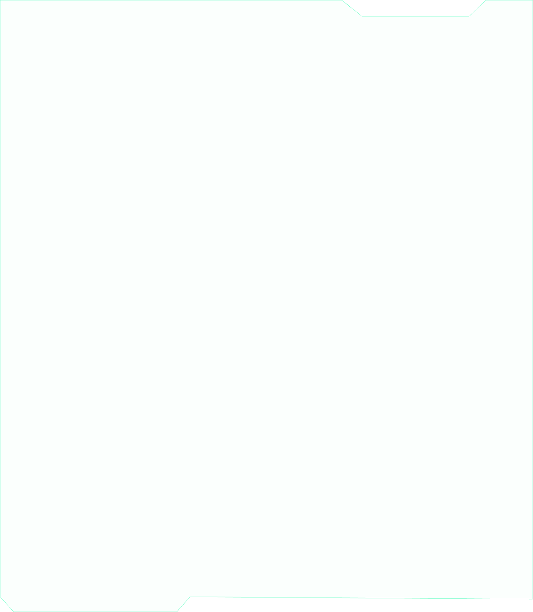
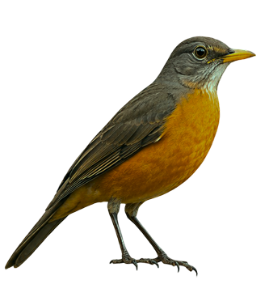
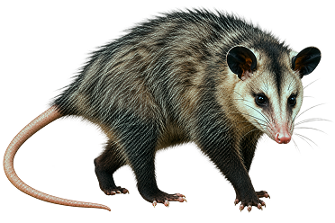
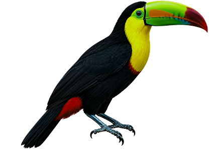
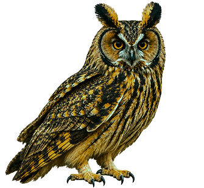
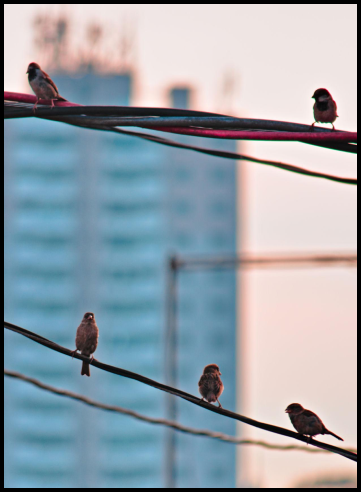

01. Encontre
Observe um animal durante seu dia.
Descubra a biodiversidade escondida entre prédios, parques e ruas de São Paulo. Registre seus encontros com a natureza e construa sua própria coleção de descobertas.
Conhecer espéciesObserve um animal durante seu dia.
Observe com atenção e descubra a fauna escondida pela cidade.
Complete seu bestiário e conheça novas espécies.

Descubra as espécies que compartilham São Paulo com você.
Explore suas características, hábitats e curiosidades.

Hydrochoerus hydrochaeris
.png)
Callithrix penicillata

Turdus rufiventris

Didelphis aurita

Ramphastos dicolorus

Asio clamator
A natureza faz parte da cidade, mesmo quando passa despercebida. O Bichos da Metrópole nasce para aproximar as pessoas da biodiversidade urbana, transformando encontros cotidianos com animais em oportunidades de descoberta e aprendizado.
Faça parte do projeto
A natureza se reinventa
Em meio ao concreto, ao trânsito e à movimentação constante, a vida selvagem encontra novas maneiras de existir. Aves transformam postes e edifícios em pontos de observação e descanso, enquanto algumas espécies ajustam seus cantos para serem ouvidas acima do ruído urbano.
Cada comportamento revela a capacidade de adaptação da fauna e as diferentes estratégias utilizadas para sobreviver em um ambiente profundamente transformado pela presença humana.
Explore. Observe. Registre. Descubra
Crie sua conta, registre os animais que encontrar pela cidade e construa seu próprio bestiário enquanto contribui para conhecer melhor a biodiversidade de São Paulo.